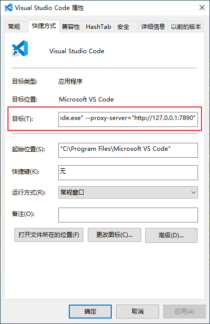

为Visual Studio Code PC客户端设置代理
Set proxy for Visual Studio Code on Windows
文章内容均来自 VS Code 官方文档 详见
通过设置
http.proxy的方法现已失效（只能在有限场景下提供支持）
为 VS Code 启用代理
VS Code 与 Google Chromium 具有完全相同的代理服务器支持。
所以
VS Code 支持使用系统代理。
为 VS Code 单独设置，避免改变系统代理带来的一些问题。
在快捷方式中附加以下命令即可：
1
2--proxy-server="http://127.0.0.1:7890"
# 将引号内容替换为自己代理服务器地址和端口如下图：

需认证代理。
使用带有用户和密码的http代理时，将弹出用户密码提示框。
支持以下认证方法：
- Basic
- Digest
- NTLM
- Negotiate
SOCKS5 不支持。
其他问题详见 VS Code 官方文档。